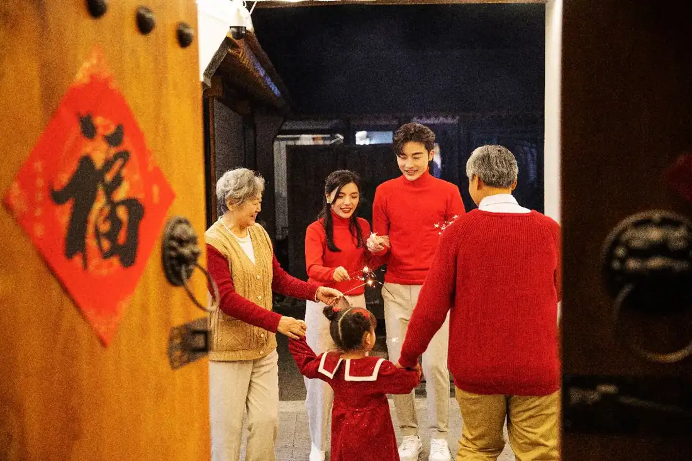
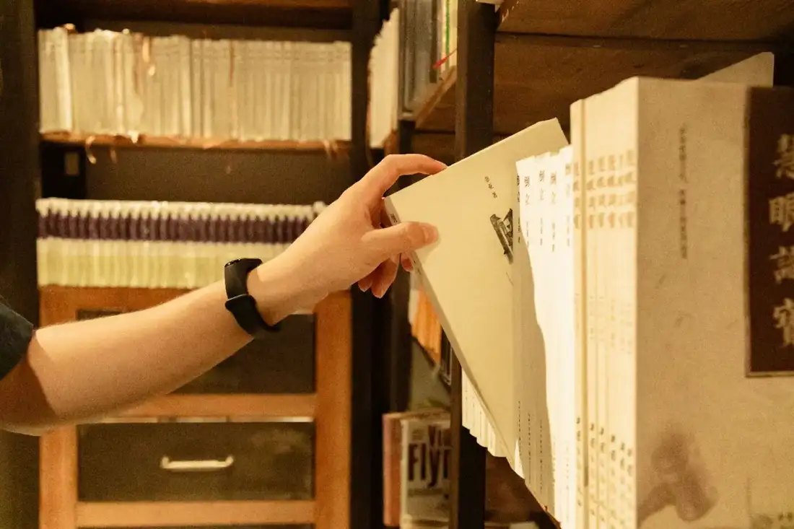
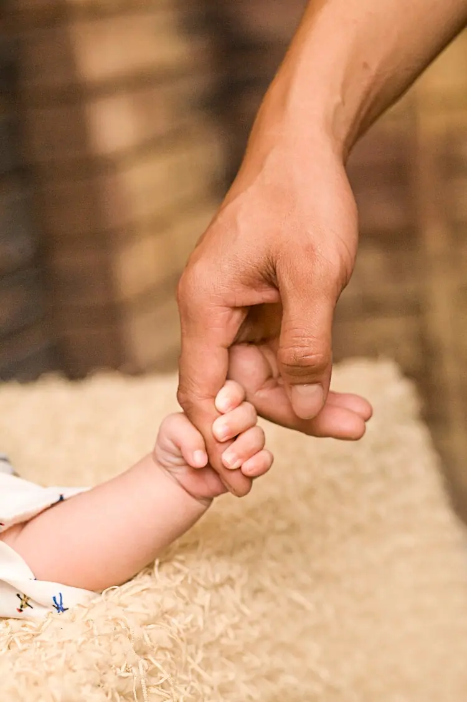

Giáo trình HSK 2 · Lesson 3今天回来这么晚啊
Jīntiān huílái zhème wǎn a
Hôm nay về muộn thế!
Mục tiêu bài khóa
Sau bài học, người học có thể vận dụng các điểm ngôn ngữ chính trong giao tiếp.
结果补语“完”Diễn đạt hành động đã hoàn tất.
动词重叠Dùng động từ lặp để diễn đạt hành động ngắn hoặc thử làm.
趋向补语Sử dụng 来、去 trong các động từ chỉ hướng.
Khởi động · 热身
Chọn từ rồi chọn đúng hình ảnh tương ứng.
💡 Hãy chọn một từ trước.
Từ vựng · 生词
Mặt trước có từ, pinyin, nghĩa, loại từ và nút phát/dừng. Mặt sau có hình ảnh và ví dụ theo PowerPoint.
回来
huílái
trở về
động từChạm vùng trống để lật thẻ

我明天回来。 🔊wǒ míng tiān huí lái。
Ngày mai tôi trở về. 我晚上不回来吃饭。 🔊Wǒ wǎnshang bù huílái chīfàn.
Tối nay tôi không về ăn cơm. 这么
zhème
như thế này; đến mức này
đại từChạm vùng trống để lật thẻ

今天这么热！ 🔊jīn tiān zhè me rè！
Hôm nay nóng thế! 这里人这么多！ 🔊Zhèlǐ rén zhème duō!
Ở đây đông người quá! 那么
nàme
như thế kia
đại từChạm vùng trống để lật thẻ
你为什么来得那么晚？ 🔊nǐ wèi shén me lái de nà me wǎn？
Tại sao bạn đến muộn thế? 那个房子那么大！ 🔊Nàge fángzi nàme dà!
Ngôi nhà kia lớn như thế! 完
wán
xong; hoàn thành
động từ / bổ ngữChạm vùng trống để lật thẻ
我们看完电影了。 🔊wǒ men kàn wán diàn yǐng le。
Chúng tôi xem xong phim rồi. 我学完了，可以去运动了。 🔊Wǒ xué wán le, kěyǐ qù yùndòng le.
Tôi học xong rồi, có thể đi tập thể dục rồi. 一起
yìqǐ
cùng nhau
phó từChạm vùng trống để lật thẻ
明天我们一起吃饭吧。 🔊míng tiān wǒ men yì qǐ chī fàn ba。
Ngày mai chúng ta cùng ăn cơm nhé. 他们一起打篮球了。 🔊Tāmen yìqǐ dǎ lánqiú le.
Họ đã cùng nhau chơi bóng rổ rồi. 出去
chūqù
đi ra ngoài
động từChạm vùng trống để lật thẻ
一起出去走走吧。 🔊yì qǐ chū qù zǒu zǒu ba。
Cùng ra ngoài đi dạo nhé. 我想出去旅游。 🔊Wǒ xiǎng chūqù lǚyóu.
Tôi muốn ra ngoài du lịch. 洗
xǐ
rửa
động từChạm vùng trống để lật thẻ
洗洗手再吃东西。 🔊xǐ xǐ shǒu zài chī dōng xī。
Rửa tay rồi hãy ăn. 去洗洗这个苹果吧。 🔊Qù xǐxǐ zhège píngguǒ ba.
Đi rửa quả táo này đi nhé. 自己
zìjǐ
tự mình; bản thân
đại từChạm vùng trống để lật thẻ
他每天自己走路上学。 🔊tā měi tiān zì jǐ zǒu lù shàng xué。
Mỗi ngày cậu ấy tự đi bộ đến trường. 这本书是他自己买的。 🔊Zhè běn shū shì tā zìjǐ mǎi de.
Quyển sách này là do chính cậu ấy tự mua. 拿
ná
cầm; lấy; mang
động từChạm vùng trống để lật thẻ

老师拿来一本书。 🔊lǎo shī ná lái yī běn shū。
Giáo viên mang đến một quyển sách. 爸爸拿来一些水果。 🔊Bàba nálái yìxiē shuǐguǒ.
Bố mang đến một ít trái cây. 手
shǒu
tay
danh từChạm vùng trống để lật thẻ

弟弟的手很小。 🔊dì di de shǒu hěn xiǎo。
Tay em trai rất nhỏ. 小明，去洗洗手。 🔊Xiǎomíng, qù xǐxǐ shǒu.
Tiểu Minh, đi rửa tay đi. 为什么
wèishénme
tại sao
đại từ nghi vấnChạm vùng trống để lật thẻ
她昨天为什么没来？ 🔊tā zuó tiān wèi shén me méi lái？
Tại sao hôm qua cô ấy không đến? 今天天气很好，你为什么不出去走走？ 🔊Jīntiān tiānqì hěn hǎo, nǐ wèishénme bù chūqù zǒuzou?
Hôm nay thời tiết rất đẹp, tại sao bạn không ra ngoài đi dạo? 不错
búcuò
không tệ; khá tốt
tính từChạm vùng trống để lật thẻ
今天天气不错。 🔊jīn tiān tiān qì bù cuò。
Hôm nay thời tiết khá đẹp. 今天天气不错，出去玩玩吧。 🔊Jīntiān tiānqì búcuò, chūqù wánwan ba.
Hôm nay thời tiết khá đẹp, ra ngoài chơi một chút nhé. 送
sòng
tặng; đưa; tiễn
động từChạm vùng trống để lật thẻ
爸爸开车送孩子去学校。 🔊bà bà kāi chē sòng hái zi qù xué xiào。
Bố lái xe đưa con đến trường. 水果是谁送的？ 🔊Shuǐguǒ shì shéi sòng de?
Trái cây là ai tặng hoặc mang đến vậy? 回去
huíqù
trở về; quay về
động từChạm vùng trống để lật thẻ
我要回去上班。 🔊wǒ yào huí qù shàng bān。
Tôi phải quay về làm việc. 很晚了，你怎么还不回去？ 🔊Hěn wǎn le, nǐ zěnme hái bù huíqù?
Muộn lắm rồi, sao bạn vẫn chưa về? 每
měi
mỗi; mọi
đại từChạm vùng trống để lật thẻ
他每天都很忙。 🔊tā měi tiān dōu hěn máng。
Mỗi ngày anh ấy đều rất bận. 老师给我们每人一本书。 🔊Lǎoshī gěi wǒmen měi rén yì běn shū.
Thầy giáo đưa cho mỗi người chúng tôi một quyển sách. 累
lèi
mệt
tính từChạm vùng trống để lật thẻ
我今天很累。 🔊wǒ jīn tiān hěn lèi。
Hôm nay tôi rất mệt. 走这么长时间，真有点儿累了。 🔊Zǒu zhème cháng shíjiān, zhēn yǒudiǎnr lèi le.
Đi lâu như vậy, thật sự hơi mệt rồi. Bài khóa · 课文
Ảnh ngữ cảnh bên trái, nội dung và âm thanh gốc bên phải. Bài khóa 4 giữ đúng dạng đoạn văn.
Tương tác đóng vai
Chọn bài khóa 1–3 và nhân vật. Lời của vai đã chọn sẽ được ẩn; chỉ hiển thị chữ Hán.
Củng cố từ vựng
Lật đáp án từ vựng rồi hoàn thành câu hỏi đọc hiểu.
Câu hỏi đọc hiểu
Mẫu câu cần nhớ: 工作太多了，下班的时候没做完。你自己拿。我真想让他休息休息。